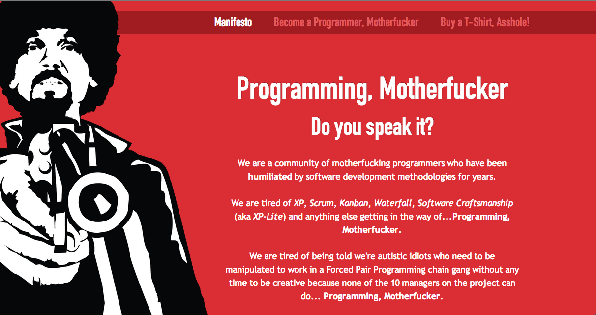

The Importance of Developer Communities
The impact they have, and how to build them
Jennifer Wadella | @likeOMGitsFEDAY
I want to thank you for making it all the way through to this last session, on your Saturday. I hope it's been a fantastic conference for you so far. I'm going to talk to you about developer communities. Why they're important ... the impact they have ... and how to build them.
Jennifer Wadella
Front-end developer
Organizer behind CoderDojoKC
Founder of Kansas City Women in Technology
Girls in STEM panelist/Technology Education Advocate
Tweet @likeOMGitsFEDAY
A little background on me - my name is Jennifer Wadella, and you can tweet at me @likeOMGitsFEDAY. It's a handle from my gaming days, my actual handle, Fedaykin, was too hard to pronounce, so my clan mates called me "Feday" instead. Am I the only one who wonders about where peoples' handles come from? Welp, now you know my story.
I work as a Front-end developer at VML. I went to school for graphic design and business management. I thought I wanted to be a creative director. Hah. No. I fell into web development by accident, and having been loving life (almost) every day since.
In 2013 I decided I wanted to meet more lady-devs, so I founded Kansas City Women in Technology. It's interesting being the only woman in the room, hence my founding of a more specific developer community.
CoderDojoKC is a free program that teaches kids how to code, and is another developer community.
Tech Ed Advocate - Shawnee Mission CTE Advisory board, Girls in STEM committee member, planning committee for Girls in STEM conference
So, why are developer communities important?

So... why are developer communities important?
Culture.
Growth-oriented?
New Technology?
Innovative Projects?
Open source work?
Time for R&D?
Full stack development?
Dev Ops?
Did you find this funny?
Maslow's Hierarchy
Acceptance. Maslow's freaking heirarchy.
physiological - health, food, sleep... the most rudimentary things we need to survive. Once those needs are satisfied, we move on to safety .
accepted and to be part of a community. The next thing we strive for is self-esteem, confidence, achievement - respect from ourself and others.
self-actualization - achieving your potential. According to Maslow, a person is always “becoming” and never remains static in these terms. In self-actualization a person comes to find a meaning to life that is important to them. I don't run into many developers who are happy with how they are now; they're always looking to learn, grow, and improve. This may explain the discontent you feel when you're doing maintenance, or on a project that doesn't require any learning or growth.
Growth.
Surround yourself with greatness.
This goes back a little bit to how communities help at a personal level. Birds of a feather flock together. You are who your friends are. There are a lot of sayings revolving around this concept. By creating a community in which you're surrounded by passionate, talented developers, you'll be giving yourself a direction to grow in, and motivation to become a 'rockstar'.
Knowledge Sharing.
No man(woman) is an island.
Discussion of new technologies, ways to solve common problems, and sharing tools and frameworks to help our workflow are all great outcomes of developer communities.
Collaboration.
A while ago, developers had a reputation for being like mushrooms - they preferred to sit alone in a dark room and code. While there still be a few of these fungi left, a growing number of developers actually enjoy - and benefit -from interaction. And by interaction, I mean with other developers, not the project manager who's infamous line 'is it done yet?' has been repeated enough to make you want to crawl into that previously mentioned dark room.
Examples
Inside and outside the workplace.
Let's now talk about existing communities you may or may not be aware of. We're going to look inside the workplace, as you probably spend a minimum of 40 hours a week there.
Workplace User Groups
Afternoon Tea
Earlier I mentioned how developer communities can solve tunnel vision with teams. When I started at my current job, I was on a new team, with all new employees. We had no connections to the rest of the company, and I was the only front-end dev. I didn't realize it at the time, but it was a lonely situation, and I wasn't
Workplace Thought Leadership
Center of Excellence
Collaborative Websites
Agency life, etc.
Collaborative Websites
Agency life, etc.
How to Build a Community
Active vs. Passive ways
Passive Community Building
There are many things you can do that aren't necessarily tangible, but still create a sense of community. Many subtle things go into the creating and maintaining of a community, and aren't difficult to do.
Make Connections.
"Networking for developers"
Most of the time at work you'll see me head down writing code, headphones blaring. That's doesn't always indicate approachability. In truth, my team currently sits by the most active conference room, and it's noisy and distracting. Introduce developers to each other. Someone has a question? Match them with someone you know who has experience.
Lunch it Up.
BE SURE TO INVITE THE NEW GUY.
Getting away for lunch is a great way to build a sense of community. Let off some steam about projects, talk through a problem you can't solve, banter about which MV* framework you prefer.
Evangalize Your Workplace
Love your job? Preach!
Word of mouth has a huge impact in a company's reputation. People want to be around positive, happy people. If you want to work alongside people
Actually Attend Company Events
(it's ok a recruit a posse to attend with)
At a marketing agency where developers don't make up the majority, we frequently band together to attend company events.
Champion Developers Around You.
When someone does something fantastic, help them get recognition for it.
Give Feedback.
When someone does something fantastic, help them get recognition for it.
At a marketing agency where developers don't make up the majority, we frequently band together to attend company events.
Active Community Building
Things you can do that may not necessarily be tangible, but create a sense of community.
Introduce developers to eachother. Someone has a question? Match them with someone you know who has experience.
Create programs.
merp
You'd be suprised how easy it is to get upper management on board if you've already done the heavy lifting in creating something.
Clever Quotes
These guys come in two forms, inline:
“The nice thing about standards is that there are so many to choose from” and block:
“For years there has been a theory that millions of monkeys typing at random on millions of typewriters would
reproduce the entire works of Shakespeare. The Internet has proven this theory to be untrue.”
Fragmented Views
Hit the next arrow...
... to step through ...
any typeof view fragments
This slide has fragments which are also stepped through in the notes window.
Fragment Styles
There's a few styles of fragments, like:
grow
shrink
roll-in
fade-out
highlight-red
highlight-green
highlight-blue
current-visible
highlight-current-blue
Spectacular image!
Export to PDF
Presentations can be exported to PDF , below is an example that's been uploaded to SlideShare.
Take a Moment
Press b or period on your keyboard to enter the 'paused' mode. This mode is helpful when you want to take distracting slides off the screen
during a presentation.
THE END
BY Hakim El Hattab / hakim.se